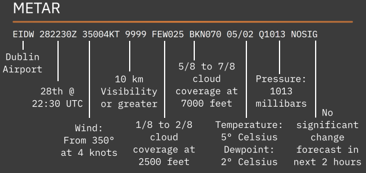

ABOUT US
WxBrief is a free source for aviation weather. Our site provides you with the weather reports you need along with live radar and satellite imagery of every major airport in the world.
We want you to have this information at your finger tips so that you have the situational awareness to make good decisions every time you plan a flight.
FAQ.
What is a Metar?
METAR stands for "Meteorological Aerodrome Report". It is a standardised weather report that gives an overview of the current weather at a particular airport. They are published every 30 minutes, or every 60 minutes depending on where in the world the airport is.
However, on occasion you will see a SPECI weather report, meaning "Special". These are published if there has been a significant change in the weather since the last METAR was published.
What is a TAF?
TAF stands for "Terminal Aerodrome Forecast". It is a standardised weather report that gives an overview of the expected weather at a particular airport. They are typically published every 6 hours and generally cover a time period of 24 to 30 hours from the time of publication.
On rare occasions, a TAF will be published before the normal 6 hour period if a significant change in the forecast conditions occurs.
How can I read these weather reports?
There are some minor differences between presentation of the reports in the U.S.A., Canada and Europe, but their meanings are generally identical with the only major difference being the units of measurement used. Once you understand how to decode the codes in any one of these areas you will be able to decode the others.
To help with your understanding and to provide a quick reference to help you decode the reports please see the links below.
As always, please refer to ICAO, EASA and FAA documentation for official source documentation.
European METAR Decode Quick Reference European TAF Decode Quick Reference USA METAR & TAF Quick Reference Canadian METAR & TAF Quick ReferenceTHE LEGAL STUFF
We make every effort to ensure the information provided is accurate and up to date, however, as this is a free source we cannot gaurantee this. Please refer to official sources for your preflight planning requirements.
If you notice any discrepancies with the data provided please let us know on the contact page.
Disclaimer:
- WxBrief accepts no responsibility or liability for inaccuracies in the information provided.
- The material presented shall not be used for preflight or operational planning in lieu of material sourced from officially approved sources.